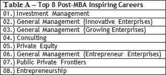
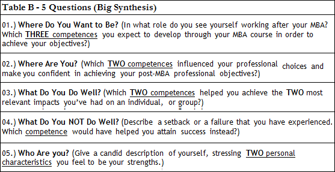

Nicholas, time to begin your Megaron Marathon. Time to take your first step towards your dream of attending an international top MBA program.
I look forward to it, Megaron, but, first, tell me: if you were to offer one piece of advice to those who begin their project, what would it be?
Through 14 years guiding MBA candidates, I have observed a common trait among successful applicants.
Can’t wait to hear that.
It would be fantastic if you could absorb their winning mindset. Nicholas, outstanding applicants begin their Megaron Marathon with one idea of what their professional futures will be like.
I’ve read carefully Km -3 – Right Profile, but I am not yet convinced of the importance of articulating a possible post-MBA position now on Km 0.
Nicholas, I understand both your difficulty and your resistance.
Well, after all, why is it so important to have now an idea about my professional future?
The admission committee members (AdCom) want to know whether you are competent to follow an inspiring career at the end of your MBA experience.
I think I get it. You know, consulting taught me the importance of WIIFT.
WIIFT?
WIIFT = “What’s in it for them?” How we must define the problem from the client’s perspective from day zero of a project.
Great, if you allow me, I will start using this acronym with my students. Simply put, they want to know whether you will be a future former student on par with the values of the school.
And how do they analyze the candidacy under that perspective?
They base their analyses on a straightforward question: “does this applicant show evidence of success in the positions that our recruiters will offer when he or she graduate?”
I see. I cannot keep out of sight the meaning of B in Business School. I think much of a school’s credibility lies on their capacity to form professionals that meet the needs of recruiters.
What really matters here is that you understand that we have a competence-based application. Essentially, they will assess your competences, always to know whether you can conquer the best post-MBA positions.
But what could be this post-MBA? Do people sell something very concrete regarding their future?
Yes, Nicholas, they do. What you can sell as your post-MBA goal is quite predictable. See: Table A below.

I have read that in the INTRO. You have identified the so-called 8 Heroes’ Profiles, right? Depending on the profile, each applicant will sell a different post-MBA career aligned with his or her values, is that so?
Exactly. After years studying the patterns in the stories of winning applicants, I identified 8 Profiles of candidacy. Each Hero will defend a thesis about his or her future before the AdCom.
Great. Are there only 8 theses for an applicant to build his defense to the AdCom?
Each applicant has a unique story. This unique character enables him or her to stand out among the crowd. But there are only 8 narrative patterns to market you to the AdCom. And the best: you do not have to reinvent the road. Our 8 Heroes have already pursued the path that you are about to begin. They will guide you through the way, easing your pursuit.
Will they become a kind of “coaches” in my project?
Exactly. Each of the 8 Heroes will reveal his or her journey of success. All you have to do is follow them and be inspired to tell your personal story. Besides being coaches, they will be true mentors in your journey of self-awareness.
And do you believe I have a profile that is similar to the thesis that one hero has already defended?
Yes, I do. As I said, there are only ways to narrate your stories to the AdCom.
What do I need to do to find out what my profile is?
Take the "8 Heroes Profile Test" and then read carefully the profile of one of the 8 Heroes that comes the closest to your way to act upon the world.
And then?
During your Marathon, you will understand how each of the 8 Heroes made his or her sale. Then you will write your stories inspired on someone who has already pursued that same path and succeed in selling his or her values.
So, if I get it right, the entire process is about revealing that I am competent to follow one of those 8 inspiring careers, right?
Yes, once again, we have a competence-based application.
But how can the Marathon help me reveal those competences?
I built the methodology to look like a “test field” so that you can defend your thesis.
I understand. I have, in a way, to “prove” what I am saying.
Right, in every Km, you will have to offer sound evidence to support your thesis.
Ok. I would like to know, concretely, what this questioning is like.
That’s when we need the "Hero's Temple", a framework that will question how well you can defend your thesis.
Could you give me an idea how it works?
Our framework will help you answer the 5 questions below. Every applicant must know how to answer thoroughly these 5 synthetic questions (Table B):
